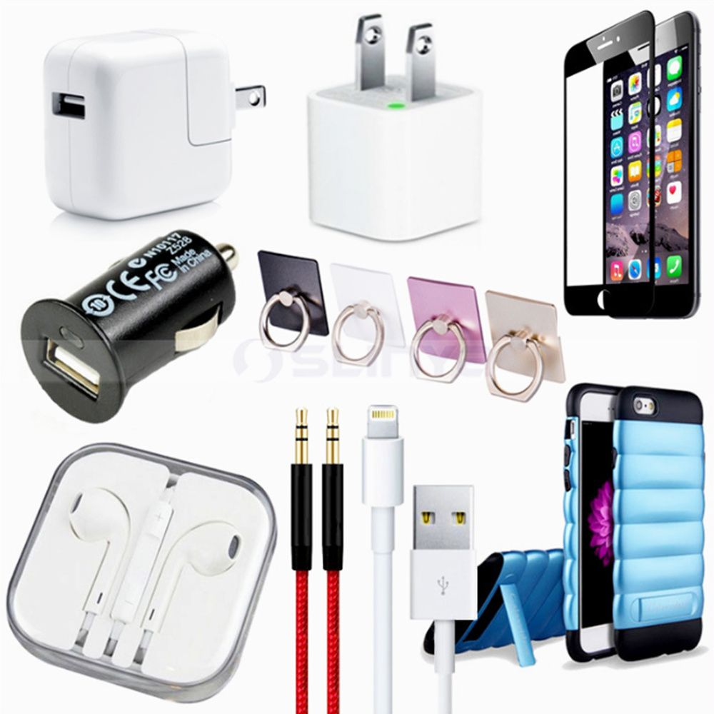
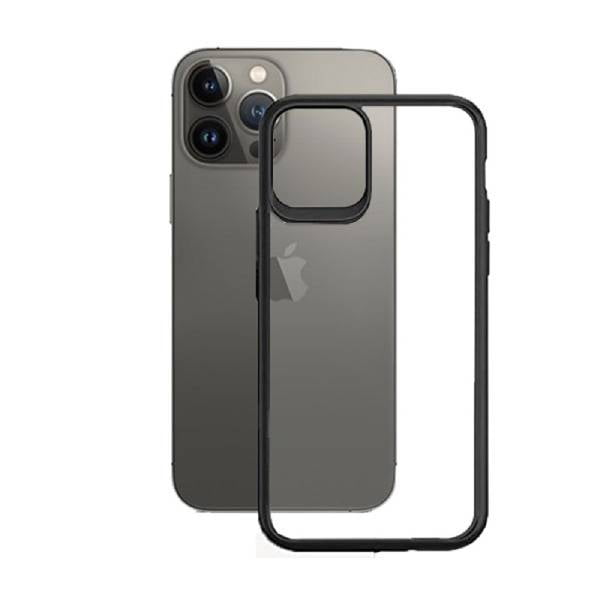
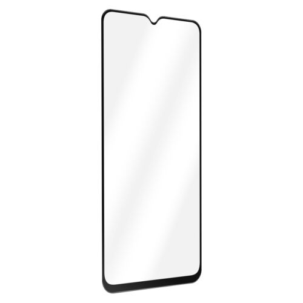

PRODUCT & SERVICES
Phone Repair Services:
3 Brothers, we offer a comprehensive range of phone repair services for all major phone brands and models. Our services include screen repairs and replacements, water damage repairs, battery replacements, charging port repairs, camera repairs, and more. Our expert technicians use only the highest quality replacement parts and the latest repair techniques to ensure your phone is restored to its original condition. Plus, our repairs are backed by a warranty, so you can have peace of mind knowing that your phone is in good hands.
Book Repair NowAccessories
In addition to our repair services, we also offer a wide selection of accessories to keep your phone safe and looking great. We have a variety of products that are compatible with all major phone brands and models, including cases, screen protectors, chargers, cables, headphones, and more. Our accessories are made of high-quality materials and are designed to provide maximum protection and functionality for your phone.
Protective Cases:
understand how important your phone is to your daily life, which is why we offer a range of protective cases to keep your phone safe from drops, scratches, and other damage. Our cases are available in a variety of styles, colors, and materials to suit your individual preferences. We have cases for all major phone brands and models, including Apple, Samsung, LG, and more.
Screen Protectors:
offer a variety of screen protectors to keep your phone's screen free from scratches and cracks. Our screen protectors are made of high-quality materials and are easy to install. We have screen protectors for all major phone brands and models, including tempered glass, anti-glare, and privacy screen protectors.
Fast Turnaround Time:
understand that your phone is an essential part of your daily life, which is why we offer a fast turnaround time on all repairs. We work quickly to diagnose and repair your phone, so you can get back to your day-to-day activities as soon as possible. Our goal is to provide you with a hassle-free repair experience.
Exceptional Customer Service:
3 Brothers, we pride ourselves on providing exceptional customer service. Our friendly and knowledgeable staff will assist you with all your phone repair needs and answer any questions you may have. We're here to help you stay connected with your phone, and we'll do everything we can to ensure you have a positive experience with us.